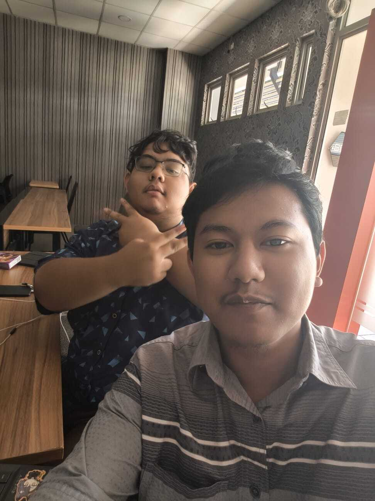
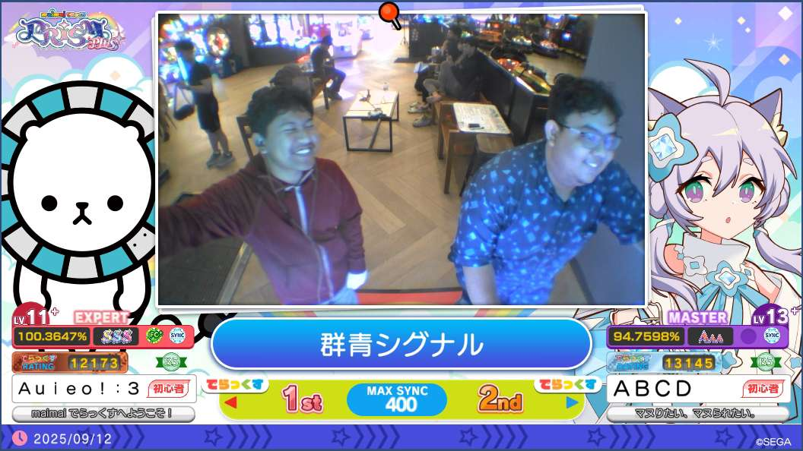
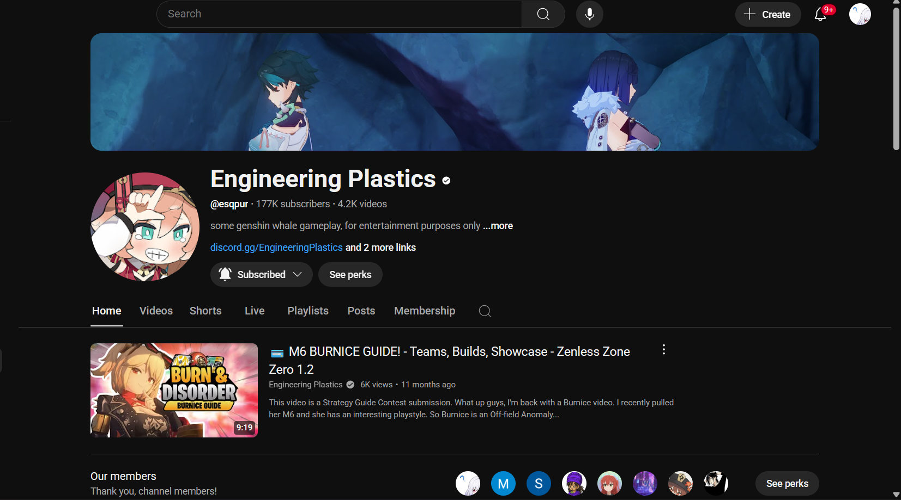

Profile
Hello everyone, my name is Danish Faiq Ibad Yuadi, a second-year Bachelor student at Institut Teknologi Sepuluh Nopember in the Informatics Engineering Department. Currently living in Surabaya, specifically in lecturers' housing on Block U.
I started playing Maimai in mid-2024, and it has become one of my hobbies, besides reading. I began playing more often after entering my second year. I usually play at GM3 and GM1 because they are the closest Maimai cabinets to ITS.
Additionally, I've been a team member for the YouTube channel "Engineering Plastics" since 2022. This long-term role has been very beneficial; it has allowed me to earn money for savings, gain valuable work experience, and significantly improve my communication skills (help, my current GPA is still 3.13 (╥﹏╥)).